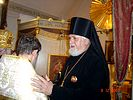
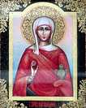

Храм святой равноапостольной Марии Магдалины
(Русская Православная Церковь Московского Патриархата).
 | Предоставляем данную информацию по просьбе настоятеля храма Марии Магдалины в Гааге архимандрита Никона (Якимова). Храм святой равноапостольной Марии Магдалины
(Русская Православная Церковь Московского Патриархата). Богослужения совершаются:
Всенощное бдение в субботу, начало в 17 часов
Божественная Литургия в воскресенье, начало в 10:30
В богослужебной жизни используется юлианский календарь. Службы совершаются на церковно-славянском языке.
Настоятель храма Марии Магдалины - иеромонах Иоанн Roodvoets.
| Tелефон:
| (+31) 070 211 70 43 (церковный дом) и (+31) 06 41525442 (моб. телефон) | web:
| ÂÂ https://ruskerkdenhaag.wordpress.com/111-2/ | Адрес храма: | Obrechtstraat 9, 2517 VL Den Haag, Nederland | Адрес церковного дома | 1-e Sweelinckstraat, 54, 2517 GE, Den Haag (на параллельной улице) |
Святая равноапостольная Мария Магдалина.
(память Апрель 28, Июль 22, Май 4 по новому стилю)
Cвятая
равноапостольная Мария Магдалина, одна из жен-мироносиц, удостоилась
первой из людей увидеть Воскресшего Господа Иисуса Христа.
Святая
Мария Магдалина следовала за Христом вместе с другими женами,
исцеленными Господом, проявляя трогательную заботу о Нем. Она не
оставила Господа после взятия Его иудеями, когда начала колебаться вера в
Него ближайших учеников. Страх, побудивший к отречению апостола Петра, в
душе Марии Магдалины был побежден любовью. Она стояла у Креста вместе с
Пресвятой Богородицей и апостолом Иоанном, переживая страдания
Божественного Учителя и приобщаясь великому горю Богоматери. Святая
Мария Магдалина сопровождала Пречистое Тело Господа Иисуса Христа при
перенесении Его ко гробу в саду праведного Иосифа Аримафейского, была
при Его погребении (Мф. 27, 61; Мк. 15, 47). Служа Господу во время Его
земной жизни, она желала послужить Ему и после смерти, воздав последние
почести Его Телу, умастив его, по обычаю евреев, миром и ароматами (Лк.
23, 56). Воскресший Христос послал святую Марию с вестью от Него к
ученикам, и блаженная жена, ликуя, возвестила апостолам о виденном —
«Христос воскрес!» Как первая благовестница Христова воскресения, святая
Мария Магдалина признана Церковью равноапостольной. В этом благовестии
главное событие ее жизни, начало ее апостольского служения.
| |
Проезд: от центрального вокзала трамвай №17 до остановки Waldeck Ryrmontkade; трамвай №3 до остановки Speijkstraat. К центральному вокзалу: автобус №24 |
| |


")

")
{kind=link}